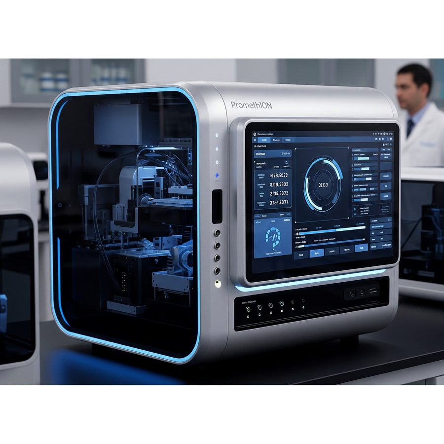

Ten years of getting usable data out of material that didn’t want to give it up: single-cell isolation and multicolor FACS, NGS across Illumina, Nanopore & PacBio, and an 11,161 bp synthetic viral genome built from four pieces of DNA.
The story my family tells is that at three years old I was already interrogating how the universe worked, and taking it personally when the answers didn’t come. Science fairs were the best week of every school year (volcanoes, tornado chambers, the works), and A Brief History of Time was what I read for fun, which tells you roughly everything about my childhood social calendar. Growing up on the Gulf Coast of Florida, that curiosity ran on two tracks: fishing turned into a fascination with the biology of fish, and baseball turned into an obsession with the physics of the game. A fifth-grade teacher told my parents I’d end up a shark biologist. She had the species wrong. She did not have the trajectory wrong.
That turned into a decade of hands-on molecular biology across academia, an early-stage biotech startup, and big pharma. I studied Biomedical Sciences at the University of South Florida with a minor in Biomedical Physics, then took an M.S. at Auburn University’s College of Veterinary Medicine, where I walked in planning to work on reproductive medicine and walked out doing cancer biology and precision medicine. That pivot set up everything that came after it.
“Everything I do comes down to one thing: pulling real signal out of biological material that doesn’t want to give it up, then writing the method down well enough that somebody else can run it.”
At Auburn I developed the first published protocol for isolating melanocytes from canine skin and oral mucosa, which is a genuinely hard rare-cell problem, since melanocytes are only 3-5% of the cells in skin. The founders of Humane Genomics recruited me out of my thesis defense, and I became one of the company’s first three employees and built a synthetic-virology lab from an empty bench: qPCR pipelines, Nanopore sequencing workflows, and viral vectors engineered for precision cancer therapy. Merck and Azenta Life Sciences came after that, and both sharpened the method-development side across high-throughput, multi-platform sequencing.
I’m GLP/GCP-trained, I’m good at turning a messy biological problem into a research plan somebody can actually execute, and I currently work at the intersection of gene editing, viral vectors, and next-generation sequencing. What I want next is to point that same method-development rigor at a cGMP analytical-development environment supporting first-in-human and IND products.
I’ve seen this field from both ends. I built bench science from day one at a three-person startup, then carried that same method-development discipline into large-pharma and CRO environments, where the sample volume is a hundred times higher and the documentation matters even more than the result.
Every one of these started as a “how do we even measure this?” question and ended as a method somebody else could pick up and run. That second part is the part I actually care about.
I co-developed a synthetic-biology platform for engineering Vesicular Stomatitis Virus from the ground up. We assembled a full-length genome out of modularized DNA fragments, rescued it, and titered it, and phenotypic analysis showed no significant difference between the natural and the synthetic virus, which is the whole ballgame, because it means building the thing from scratch didn’t cost us the biology. Then we proved the platform was actually flexible by swapping in a foreign glycoprotein and rearranging the gene order (VSV-P ⇄ VSV-M), which is design freedom you don’t get from conventional reverse genetics.
At the height of the pandemic we built a SARS-CoV-2 vaccine candidate on the same VSV backbone behind Merck’s approved Ebola vaccine, swapping the native glycoprotein for the SARS-CoV-2 spike protein. We went from design to functional virus particles in under a month. Live-cell Incucyte imaging confirmed the candidate displayed spike on its surface and bound the ACE2 receptor the way the real virus does. I scaled production 100-1000x for the animal work, and a rat study at Auburn’s Scott-Ritchey Research Center came back well tolerated with no adverse reactions, confirmed on CBC and clinical chemistry. We wrote and submitted a pre-IND to the FDA, and then we wound the program down, because authorized vaccines had reached the public and the world didn’t need ours. That was the right call. It still stings a little.
Program write-ups: Proposal ↗ · Scientific basis ↗ · Lab update ↗ · Final results ↗
I built one workflow that takes a candidate virus from harvested supernatant to called sequence in a single day. The route runs supernatant harvest → viral RNA isolation → cDNA synthesis → PCR amplification → library prep on the Oxford Nanopore Rapid Barcoding Kit → sequencing → assembly and analysis. Barcoding let me multiplex up to 24 viral genomes in one run, which turned a serial, multi-day sequencing chore into a parallel screen. What that buys you in practice: a bench scientist can confirm construct identity across a whole panel of candidates within 24 hours, which is fast enough to steer the next round of engineering instead of finding out a week later that round one was wrong.
I built protocols to isolate the normal-cell counterparts of three skin tumors (melanocytes, keratinocytes & mast-cell progenitors), so precision-oncology work would have something honest to compare a tumor transcriptome against. The melanocyte method was the first published route for canine cells, and other labs have since reproduced it independently, which is the compliment I actually wanted.
Viral passaging kept handing me RNA with yield and purity too poor for one-step RT-qPCR, so I engineered a two-step method instead. It quantified viral genomes cleanly across 10³ to 10¹² genome copies, produced the titer data that dosed our in vivo mouse studies, and became the seed of the lab’s whole genome-sequencing workflow.
I engineered oncolytic VSV to kill GPC3-positive liver-cancer cells and leave everything else alone, pairing a retargeted glycoprotein with aptazyme replication switches. It infected and lysed at low MOI, did nothing to GPC3-negative cells, and 10⁷ PFU doses were well tolerated in vivo.
I built an indirect sequencing route (RNA → cDNA → dsDNA → Nanopore) to read engineered virions base by base for QC, then kept squeezing the plasmid version until it ran miniprep-to-analysis in two hours.
A service concept I’m developing to scale native RNA-seq from single-sample pilots up to 96-plex cohort studies: sequencing the actual RNA strand, with no cDNA and no PCR bias, on Oxford Nanopore’s SQK-RNA004 chemistry.
Direct RNA sequencing trades cost for authenticity: one flow cell, one sample, real modifications preserved. That’s a fine trade until you want a cohort. 96-barcode multiplexing rewrites the arithmetic: pool an entire well-plate onto a single PromethION run and the per-sample cost falls from roughly $900 to about $10, without giving up direct-strand sensing.

Nucleic-acid extraction through base-called, aligned, variant-called data, with enough assay-development and QC discipline that every step still holds up when somebody else is the one running it.
A web application I built myself for navigating biotech careers, using the same modern AI tooling behind the Google AI Professional Certificate above. It seemed more useful to ship something with the skillset than to just hold the certificate.
A decade of output: one peer-reviewed journal article, a stack of conference posters, a Master’s thesis, and contributions to patented synthetic-virology technology.
Precision oncology needs the normal counterpart of a tumor to compare against, and for these three cell types nobody had a clean way to get it. These are the wet-lab methods I developed at Auburn to pull three hard-to-isolate normal cell types out of canine skin and blood, each one repeatable and clean enough for single-cell sequencing. Tap any step for detail.
Melanocytes are only 3-5% of skin cells. First published method for canine skin & oral mucosa.
Keratinocytes are ~85% of skin, so yield is high. Comparator for basal & squamous cell carcinoma.
Skin mast cells are <1% of cells and hard to purify, so the target moved to circulating progenitors.
Full parameters, controls and gating strategy are in the M.S. thesis and the progenitor / melanocyte posters.
Since 2024 I’ve owned and operated a weekly trivia business across multiple Jersey City venues. It is the same obsession with getting the answer right that I bring to the bench, aimed at pop culture and a room full of people who have been drinking.
The job is equal parts host, statistician, and small-business owner: writing and fact-checking the quizzes, running a room of 200+ guests, managing staff, negotiating client contracts, and keeping real-time scores on a weekly schedule that doesn’t move.
To keep regulars coming back I built a custom loyalty-leaderboard app that eats every night’s scores and turns them into a living season standing. Each team earns a Loyalty Score and a tier (Casual → Intermediate → Pro), with trend arrows showing who’s heating up week to week.
The good part is the alternative standings. A handful of powerhouse teams will win everything if you let them, so I built races they cannot dominate: a Handicap Cup that rewards beating your own past average, a Giant Slayer Cup for upsetting the dominant teams, and Median Battles, which crowns the most reliably middle-of-the-pack squad in the room. Everybody gets something to chase.
A job search engine for life-sciences scientists. Drop in a CV and it reads your skills, then ranks live postings pulled straight from the job boards of 79 biotech companies. I built it because every job site I used was matching me on keywords and job titles, which is a terrible proxy for whether a bench scientist can actually do the work, and I got tired of it while job hunting myself.
Most job boards just search the text of a posting. This one parses your CV against an ontology of 67 canonical biotech skills (AAV, oncolytic vectors, RT-qPCR, Nanopore, FACS, UF/DF, cGMP) and builds a weighted profile of what you can actually do at a bench.
Every posting gets scored against that profile. It surfaces roles a keyword search would bury, and it shows you the gaps too: skills a role wants that your CV doesn’t evidence yet.
There is no backend. The PDF is parsed by JavaScript in your own browser, and the postings come from the public ATS APIs companies already serve. Nothing is stored and nothing is sent anywhere, including to me.
PDF.js extracts the text in-browser, rebuilding line structure so job titles stay distinguishable from body prose.
Skills are claimed by trigger terms and damped on a log scale, so a word that's merely common in prose can't outrank a specialised technique.
Greenhouse, Lever, Ashby and SmartRecruiters are queried directly. Every link goes to the company's own board, so nothing is stale or reposted.
Roles are matched against your core skills and career level, then filtered by commute radius: 25, 50, 100 miles, or remote.
An SOP writer for the bench. Describe the work, or point it at a manufacturer’s kit protocol, and it returns a runnable standard operating procedure: hazards, PPE, equipment, reagents, numbered steps with times and temperatures, QC acceptance criteria, a troubleshooting matrix, and a reaction sheet whose volumes are derived rather than asserted. I built it because I’ve written a lot of protocols, and the tedious part was never the science.
The model proposes concentrations; a deterministic engine derives the volumes from C₁V₁ = C₂V₂. When the two disagree you get the derivation, not a silently corrected number. Overflow is an error rather than a quietly redefined reaction volume, and a volume below what anyone can actually pipette comes back with an intermediate-dilution recipe instead of a shrug.
Behind it sits a repository of 1,231 commercial kit products across 32 vendors: NEB, Thermo, MilliporeSigma, Promega, QIAGEN, CST, Cytiva, Miltenyi, Norgen, Roche, Twist, Bio-Rad, Abcam, Biotium, GenScript, Bio-Techne, Takara, Lonza, STEMCELL, Active Motif, Agilent, Illumina, Zymo, Macherey-Nagel, Omega Bio-tek, Oxford Nanopore, Mirus, 10x, IDT, Beckman, PacBio, BioLegend. Every catalog number was confirmed on a fetched vendor page, and anything I couldn’t confirm was left out rather than guessed at. Name a kit and the SOP gets written around that kit’s real chemistry.
Next to it sits the protocol library: 183 protocols across 36 disciplines, 124 of them reference methods transcribed from published standard practice with their primary citations attached, the other 57 written around a specific vendor kit. Every one of them still has to be read and adapted to your own cells, agents and institutional rules before it runs, and the library says so on the page rather than in a footnote.
References are checked against Crossref and PubMed and come back in one of four honest states: verified, mismatch (a real DOI attached to the wrong paper, which is the hallucination signature), not found, or unchecked when the registry itself is unreachable. Unreachable isn’t the same as nonexistent, and the badge says which one it is.
Nothing is stored on a server. Protocols, immutable versions, hash-bound signatures and an append-only audit log live in your own browser, and the Word, Excel and robot worklist files are built there too. Across a full test session (save, sign, reload, export, encrypt a backup, wipe, restore) the page made exactly one server request, and it was the health check.
Pick a discipline and the form changes with it. A titration asks for cell line, MOI and CPE scoring rules; a stain asks for fixation, retrieval buffer and pH. It stopped interrogating every assay about Covaris settings.
Sections arrive as they’re written, with real per-section progress and a cancel button. Ten hard guardrails constrain what may appear in a components list and how steps align to the reaction sheet.
Unit algebra, stoichiometry, document completeness, citation integrity and platform chemistry. Each dimension shows its coverage beside its score, and each lists what it did not check.
Word as a controlled document (header, footer, Page X of Y, signature block, revision history), Excel with live named-range formulas, and worklists for Opentrons, Hamilton, Tecan and Echo, all built from the same engine.
The scaffold I started from called itself an ISO/GLP compliance system. Its accuracy score was clamped in code to the range 99.0-99.9, which meant it could not fail, and it printed compliance language for checks that were never written. Then it handed me a 24-plex direct RNA nanopore protocol at 99.2 out of 100, green PASS, carrying four independently fatal defects.
To be fair to the checker, its own disclaimer said it verified arithmetic, structure and citation resolution, not science. But a 99.2 next to a green PASS reads as an endorsement, and people will run what you hand them.
So the score got replaced by an auditor that can return FAIL, that shows coverage beside every score, that names what each dimension didn’t look at, and that makes no compliance claim anywhere. Nine platform-chemistry rules now carry published vendor constraints, each firing only when the document names the platform, each citing the constraint behind it. They’re prohibition-aware too: a protocol that says “do not shear” is following the rule, not breaking it. That distinction cost me a round of false positives to learn.
What it still won’t do is tell you whether the science is right for your question. It checks arithmetic, structure, citation resolvability and known platform chemistry, and it says so on screen and on every export. That’s a floor, not a reviewer.
Direct RNA sequences native full-length molecules. Oxford Nanopore states the input requires no fragmentation.
No motor protein, no controlled translocation through the pore. The library would have produced nothing.
Which denatures the motor protein the step before it just attached.
Wrong bead chemistry for the molecule. Four errors, any one of them enough to lose the run.
I host pub trivia on the side, and for two years the books lived in a spreadsheet only I could read. So I built the thing that replaced it: invoices, expenses, host payouts, W-2 paychecks with tipped hours, mileage, estimated tax, a partner ledger and a Schedule C export. It runs in the browser against an encrypted vault, with no server and no account to sign up for. The demo below is the real application, loaded with a set of books I made up.
No model, nothing inferred. Date subtraction, medians and counts. Each check shows the number it fired on, so you can look at that number and disagree with it.
The one I care about most is invoice aging, because it measures a venue against its own settled history rather than a flat 30 days. A venue that has always paid in 45 isn’t late on day 31. A venue that has always paid in 10 is.
It earned its keep the week I finished it. It flagged a night billed at a small fraction of what that venue paid on every other night of the year, with a host cut of the same odd amount sitting on the same date. The event fee had been filled in from the host-cut column.
Two bugs surfaced while I was building the outlier check, and both were the same shape. A venue whose fee never varies has a median absolute deviation of zero, so the check silently never fired on it. And the app announced that a venue’s fee “has never varied” any time that statistic came back zero, which is true whenever more than half the nights simply match. Both now read the actual values.
Venue, fee, host, date. A season generator fills a recurring weekly night in one pass instead of thirty.
Numbered invoices, aging measured per venue, and PDF import for the ones that come back as attachments.
Host payouts gated on the venue actually paying first, and W-2 paychecks with tipped hours and the full deduction breakdown.
Double-entry journal and trial balance, Schedule C, 1099 thresholds, and quarterly estimated tax.
The app had always counted a night’s fee on the night it happened. That is the accrual basis, and I had never labelled it as such, which meant the estimated tax figure was quietly including money nobody had collected yet.
Both bases now sit side by side, and the gap between them is broken out rather than asserted: invoiced but not yet collected, hosted but never invoiced, and a timing line for invoices dated in a different year from the night they cover. That third line exists because the first two don’t account for the whole difference, and a decomposition that quietly fails to add up is worse than no decomposition at all.
The reports screen translates the books into double entry, every record becoming a balanced pair. Balancing proves very little on its own, since a translation that halved every figure would balance perfectly, so it is also tied back to the totals the app already asserts elsewhere. If any of those ever disagree, the screen says so instead of showing a tidy number.
Mileage is deliberately absent from the trial balance. It is a tax deduction, not a movement of cash, and including it would make these numbers disagree with the bank. It stays on the Schedule C export, where it belongs.
Switch the basis and the Schedule C profit moves. Take-home and outstanding deliberately do not, and that is asserted in the tests.
Every record becomes a balanced pair, exported as CSV so an accountant can work in QuickBooks or anything else.
Receivables counts everything earned but uncollected, so it runs above the outstanding tile, which counts invoices only. Both are correct.
It is arithmetic on records I entered. Whether you may change basis after filing is a question for an accountant, and the app says so.
A personal budgeting app in the shape of Rocket Money: subscription detection, category budgets, net worth over time, and a bills calendar. It runs on your own machine and there is no account to make. Export a CSV from your bank and drop it in, or add your own Plaid keys and let it sync. The demo below is the real front end on eighteen months of transactions I invented.
Chase writes purchases as negative numbers. Amex writes them as positive, which is the exact opposite. Capital One splits debit and credit into separate columns, Citi does the same and adds a status column, Wells Fargo ships no header row at all, Discover keeps the transaction date and the posting date apart, and European exports arrive with semicolons, day-first dates and 1.234,56 where the decimal should be.
All of those import without configuration, because the layout is read off the file rather than declared. Amounts are the one thing the app refuses to be quiet about, since getting the sign backwards inverts every number downstream. It tells you what it decided, in a sentence with the totals in it, and puts a Flip button next to the sentence.
Re-importing the same file is safe. Rows match on date, amount and merchant, so a second import of the same statement adds nothing. It counts rather than de-duplicates, which is the distinction that matters: two genuinely separate $4.75 coffees on the same afternoon both survive. Every import undoes in one click.
A CSV from any bank, no signup. Plaid is fully built and switched off until you add your own keys.
Eighteen categories, rules you can pin so a merchant always lands where you want, and a confidence flag on anything it guessed at.
Recurring detection surfaces price rises, subscriptions you forgot, and charges that quietly stopped arriving.
Net worth over time, category budgets that suggest their own starting numbers, and a calendar of what is still coming.
Subscription detection is easy to do badly. Group by merchant, call anything monthly a subscription, and you have built something that finds Netflix. Everyone already knows about Netflix.
What is worth surfacing is change: the streaming service that went up 16%, the internet bill that went up 19%, the six entertainment subscriptions that each look reasonable on their own and together cost more than the internet does. The demo shows all three, because the sample generator plants them deliberately, along with a gym that quietly stopped charging and was never cancelled.
The Plaid integration is complete: link flow, token exchange, /transactions/sync with cursor pagination, and pending-charge handling. It ships switched off, because Plaid keys belong to a person rather than to an application. Sandbox mode uses fake banks, so the whole flow can be driven end to end before it is ever pointed at a real one.
The old amount, the new amount, and what the difference costs over a year. That last number is the one that changes behaviour.
Six streaming services is not six decisions, it is one decision made six times. The app groups them so it reads that way.
A subscription that goes quiet is either cancelled or about to surprise you. Both are worth knowing.
The store is a JSON file on your own disk. The demo you are looking at is a static snapshot with no server behind it at all.
I’m open to senior research-scientist and analytical-development roles in gene & cell therapy, NGS, and synthetic biology. Email is the fastest way to reach me.